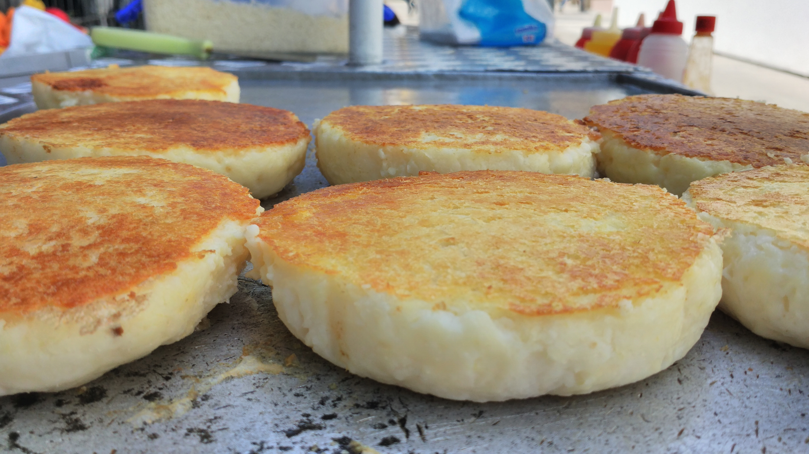

Source : Lloyd Lang
L'arepa est un pain de maïs de couleur blanche ou jaune. Elle peut être garnie notamment de jambon, de fromage, de viande, de haricots ou d'œufs. Initialement, l'arepa était connue pour être une spécialité culinaire vénézuélienne et colombienne. Du fait des échanges migratoires, elle est également populaire aux Îles Canaries et à Miami. Néanmoins, le mot arepa provient du mot erepa, qui veut dire « maïs » dans le dialecte des Cumanagotos (tribu vénézuélienne originaire de Cumaná). Sa forme est similaire à celle des pupusas et gorditas de l'Amérique centrale et du Mexique.
Les conserver dans une boîte hermétique 2 jours au frais ou les congeler jusqu’à 2 mois. Faire chauffer au micro-ondes ou à la poêle en humidifiant légèrement la surface.